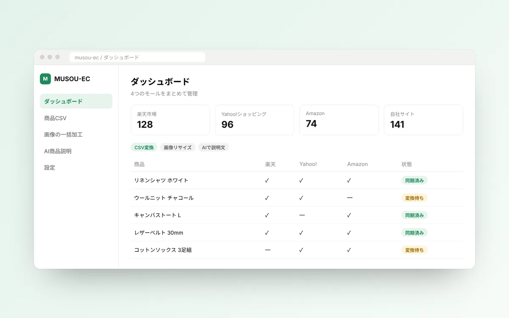

Yuitto2026
PR案件マッチングPR campaign matchingお店とクリエイターをつなぐマッチングサービスA matching service connecting shops with creators
Next.js · Cloudflare · Supabase

MUSOU-EC2026
EC運営の支援E-commerce operations楽天・Yahoo!・Amazon・Shopifyの運営をまとめて支える無料ツールA free tool that supports selling on Rakuten, Yahoo!, Amazon and Shopify in one place
Next.js · IndexedDB · Gemini

Mailer AI2026
問い合わせのAI対応AI customer support複数モールの問い合わせを集約し、分類と返信の下書きまでCollects inquiries from multiple marketplaces, sorts them and drafts replies
Next.js · Supabase · AI

Sayatori AI2026
トレンド通知Trend alerts伸びている商品ジャンルを見つけてLINEで通知Finds rising product categories and notifies you on LINE
X API · Google Trends · LINE

EC CSV Sync2026
商品CSVのAI変換AI product CSV conversionモールごとに違う商品CSVを自動変換するデスクトップアプリA desktop app that converts product CSVs between marketplace formats
Electron · Gemini

Sales Pipeline2026
営業の自動化Sales automationAIエージェントが調査・提案サンプル・営業メールを分業AI agents split the work: research, proposal samples and sales emails
Node.js · Claude Code · Gemini

Instant Concierge2026
ShopifyのAI相談AI advisor for Shopifyストア運営の相談に答えるShopifyアプリA Shopify app that answers questions about running a store
Shopify App · AI

Wishlist2026
Shopifyのお気に入りShopify wishlistストアにお気に入り機能を追加するアプリAn app that adds a wishlist to Shopify stores
Shopify App

ToDo Optimizer2026
スケジュールAIScheduling AIタスクから優先順位と予定を組む秘書エージェントAn assistant agent that turns tasks into a prioritized schedule
Node.js · Gemini

B2B Ordering2026
受発注システム（受託）Ordering system (client work)注文・見積もり・請求書PDF・入金確認をまとめて管理Manages orders, quotes, invoice PDFs and payment checks in one place
Next.js · Supabase · PDF